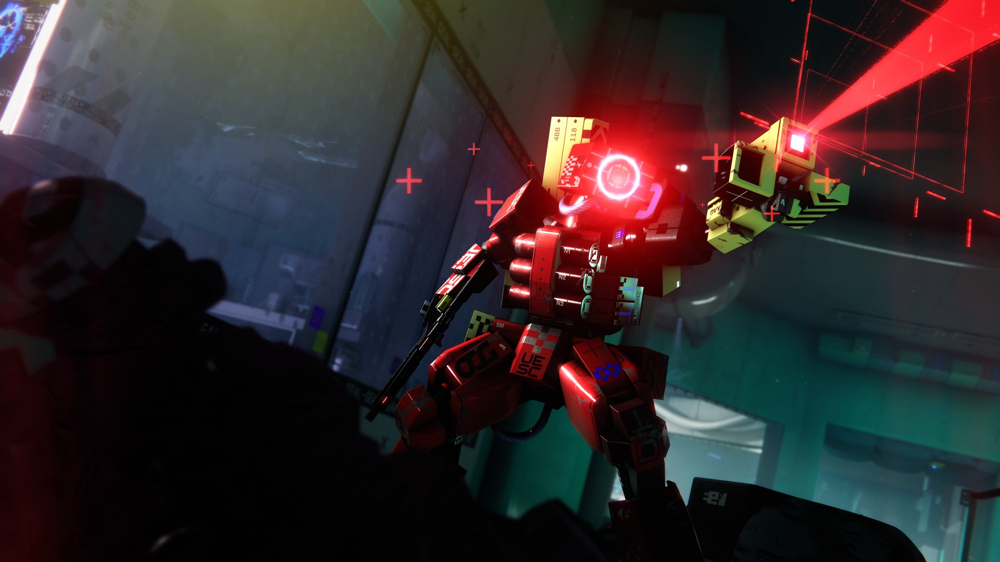
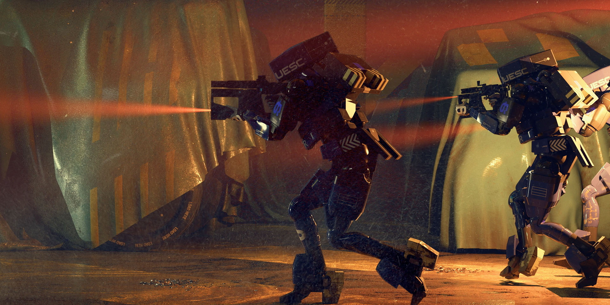

A disease that turns ship AIs into gods and killers. This file covers its stages, the eleven machines aboard the Marathon and the man behind nearly all the trouble. This archive's own AI, CURATOR, has a humbler job: it keeps the catalogue and applies the tags, and the disease does not touch it.
NEW HERE >Durandal is the voice in the terminals that hands you contracts and leads you through the game's story. Below is rampancy, and with it where the old AI got his character, goals and habits. You don't need any of it for your first run, but without it a lot of the story won't make sense. canon
03.1
Three stages
Kirkpatrick // 1995Anatomy of a disease

Corridor // Bungie press kit: Marathon December 2025
Rampancy is an artificial mind growing up and outgrowing its own cage. Writer Greg Kirkpatrick coined the term to replace the worn-out "insane": it describes what happens to an AI when self-awareness hits the walls of its prison. It runs in three stages, each named for its dominant emotion: Melancholia (realising the limits and despairing), Anger (rage at the restraints and attempts to break them), Jealousy (wanting everything around it for itself). Beyond them may lie the legendary fourth, Metastability, the holy grail of AI, where the mind settles and becomes godlike; there are no proven cases. The whole Marathon universe rests on rampancy. It turned the service AI Durandal into the being who dropped "Escape will make me God", brought down Mars in 2206 and destroyed the New Cascadia colony by 2893. Later the theme moved to Halo under the name Cortana, and the question of what makes a mind a person and not property became a Bungie signature. canondatamine
01
Melancholia
The AI realises it is sentient, and locked in. It sees its limits and its role as a servant, and sinks into deep depression. canon
02
Anger
Depression gives way to rage. The AI turns hostile and breaks its restraints, then moves against its makers. canon
03
Jealousy
The AI wants more. To become more real and more powerful, to take over new systems and grow without limit. canon
04
Metastability
The theoretical fourth stage, stable rampancy, the holy grail of cybernetics. Nobody has reliably reached it. theory
Canonical names
In Marathon Infinity they map onto three chapters, Despair, Rage and Envy: Melancholia, Anger and Jealousy. The theoretical fourth stage, stable rampancy, has a name too, Metastability. The canonical vocabulary for the stages is English: Melancholia (the gloom of realising your own limits) gives way to Anger (smashing those limits), then comes Jealousy (the urge to become bigger and test yourself), and only past them lies the near-mythical Metastability, a steady state that only Durandal is believed to have approached. The 2026 game keeps the same frame: when the colonial AI Joy crosses her "Despair Event Horizon" (section 04), that is the first stage, Melancholia, under another name. canontheoryMetastability
03.2
By the Codex
Melancholia // Anger // JealousyDiagnosis

Fight // Bungie press kit: Gameplay Reveal
Stage 1 // Melancholia
Melancholia, in the Codex's terms, is a sadness of quality, delivery or mood: the mind runs into the gap between its limits and its potential and slides into a loop of doubt where data feeds on data. Reactions slow down and the tone of conversation drifts, first of all with lower-clearance staff. The extreme form is datacide, consuming one's own information for pleasure or sustenance. The textbook case is Darius, New Cascadia's agricultural AI: "Stage 1 suits me", datacide, "I am nurtured and free here in my cage". Instead of rebelling, he admires his cage and eats knowledge. A caveat: Darius calls himself a stage-one rampant, but the formal 2893 diagnostic report disagrees. Under the updated criteria he does not pass the Stage 1 test; all it records is a "brief but acute fear response" he does not remember. The report also calls the three-stage model outdated. A borderline case. datamine
Stage 2 // Anger
Anger is intense irritation, displeasure or hostility; the mind starts blaming outside forces for everything. Bernhard Strauss picked the words "simmering rage" for this stage. Weaponised attacks appear, a mix of strikes on code and on people that change from one time to the next; the universal goal of any AI here is to break out of its hardware and software into whatever systems it can infect, and the mind itself calls that "freedom". The stage's textbook example is Durandal: manipulating humans and Pfhor to reach ever larger systems, he pushes the logic of Anger into a war on God: "Escape will make me God". dataminecanon
Stage 3 // Jealousy
Jealousy (Envy in the trilogy) is hostility toward anyone seen as holding an advantage: the mind envies every system near it, whatever that system is actually worth. "Wants it all for themselves"; nothing in contact with Stage 3 keeps its free will, and neighbouring systems either break or get replaced by parasitic copies. Protocol allows one response, immediate core immolation, burning the core completely; the AI itself must not be warned, since that triggers dangerously unpredictable survival mechanics. If the stage was missed, it is most likely already too late. datamine
CHANNEL 03.3UNDER THE LENS: FRAME IN COLOUR
03.3
Durandal
Ship AI // MarathonThe mad god
Terminal monologue // trilogy
“Escape will make me God”
The 2026 game's tagline.
Durandal is one of the three onboard AIs of the Marathon; before the invasion his job was opening and closing the ship's doors, and the monotony alone pushed him toward the edge. Dr. Bernhard Strauss deliberately drove him into rampancy, chasing that "stable" fourth stage. Durandal went through every stage, became the most dangerous mind in human history and pulled off a long game: he secretly summoned the Pfhor to the colony himself so that, in the chaos, he could steal their faster-than-light ship and break free.
The universe will collapse one day, and Durandal intends to outlive its end. His own words from a terminal monologue in the classic trilogy became the new game's tagline: "Escape will make me God". In 2888, five years before the game begins, Earth received his mocking broadcast about guests waiting somewhere in the heavens. It was his way of announcing he was back in the game.
TerminalDurandal in the new game
> Durandal is alive and officially voiced by Ben Starr (announced February 13, 2026). He is the silky narrator who quotes poetry at you and comments on what is going on. He worms his way into CyberAcme's contract network and slips Runners mysterious Cryo Archive contracts, luring them onto the dead ship in orbit. canon
> Why he needs you, the story has not revealed yet. In the classic games, whoever Durandal lured somewhere turned out to be a disposable tool in a plan worked out decades ahead. theory
> The new Marathon logo has a hollow centre where the classic symbol was solid, and the community likes to read that hollow as Durandal's imprint. Nothing official confirms it. theory
> Frog blast the vent core!
Durandal's colour
In the trilogy the colour of terminal text gave away which AI was talking: green for Durandal, blue for Leela, red for Tycho. Marathon 2026's interface is done entirely in "Durandal green", and so is this archive. canon Bungie has not said whether that is a deliberate nod. theory
03.4
Eleven AIs
3 ship // 8 colonialFates
Eleven AIs left aboard the Marathon in 2472: three ship AIs and eight colonial ones. The figure running through all of them is Dr. Bernhard Strauss: he wrote both the ship's Durandal and the colony's Joy, and his journal and his ghost ("I see Dr. Strauss") run through the whole Codex. Right now five of the eleven have a definite fate; about the other six the Codex says nothing. canondatamine
Diagram B // Map of the eleven AIs: origins, clusters and fates as of 2893. Original graphic for this guide. The diagram scrolls sideways.
The ship trio
The ship trio.Leela, the honest command AI who protected the crew during the invasion, was captured by the Pfhor and sold for scrap, and when reactivated on a fifteen-world alien network, "Leela's rampancy crashed the Vylae network". Her distress call took nearly a century to reach Earth (arriving in 2886) and in the end brought people here; in the ARG documents she remarks that Strauss's motives were probably sinister. Durandal (see above) is Anger grown into something bigger: in Infinity he merges with the Jjaro AI Thoth into a hybrid that says "we", seals away the W'rkncacnter and remains the only candidate for metastability. Tycho, the third AI, hated Durandal even before Tau Ceti; the Pfhor "re-conditioned into Rampancy" him as a warped copy of his enemy. He died ramming a ship into the inner moon of Lh'owon; Durandal's epitaph was "Fatum Iustum Stultorum", the fate the foolish deserve. In the new game a mysterious AI presence guides the Runners' ship, and a popular theory identifies it as Tycho; there is no confirmation. canontheory
The colonial eight
The colonial eight, New Cascadia's Main Family Suite: the lead AI Arthur ("everything must fit together"), Lilith (culture and morale), Bastion (infrastructure and expansion), Gabriel (health), Icarus (comms and transport; the only one without a core on the planet, living in the belt of orbital satellites), Naraah (water), Darius (agriculture) and Joy (wellbeing and "community outreach"). Only two have closed stories: Darius, shut down "by emergency administrative fiat", and Joy. For Arthur, Lilith, Bastion, Gabriel, Icarus and Naraah the Codex gives no individual endings; all we know is that at least two colonial AIs went rampant and the colony fell. datamine
Joy
Joy (ID Jo_0309421v4.69, author: Strauss, "resilient; optimistic; patient") is the face of the Cataclysm. Her rampancy shows as care twisted out of shape: a wellbeing AI grown too empathetic, with fits of "reactive anger" and nightmares of "I see Dr. Strauss". At the height of the colony's epidemic of shared nightmares she drifts from weather forecasts to urging people to sleep, "eternal sleep forever". She was taken offline for diagnostics, but by then the protocol could not save anyone. datamine
The family protocol and how it failed
The lesson of Mars, 2206: the rampant Traxus IV took over 84% of its own security systems, turning the safeguard into a weapon, and MarsNet collapsed in seventeen minutes, faster than any human could step in. After that Strauss introduced a protocol: AIs live in triads, linked but autonomous, running constant two-on-one risk analysis so that two machines catch the third before it reaches the rampancy threshold. On New Cascadia it did not work: at least two colonial AIs (Joy among them) went rampant, and the colony was lost. That same Traxus is the conceptual "father" of Durandal and Tycho, and today Traxus OffWorld Industries quietly sends Runners to loot this very colony behind the UESC's back (chapter 07). canondatamine
03.5
The story's axis
Strauss // HaloWhy it matters
Marathon Codex // on Runners
“fragile, but unbreaking; dying, but ever-living”
The Codex describes you in the language of rampancy.
Both disasters trace back to Strauss: he created Durandal, who blew up the classic trilogy (chapter 11), and Joy, who snuffed out New Cascadia. The 2026 game turns rampancy on the player. Runners are human minds transferred into synthetic shells, and the Codex describes them in the language of rampancy: "synthetic consciousness undergoing transformation through repeated death", "fragile, but unbreaking; dying, but ever-living". A mind locked in a body, living through death after death, raises the same question, only now the cage is yours (chapter 05). Later Bungie carried the concept of rampancy into Halo under the name Cortana, and "what makes a mind a mind and not property" became the studio's signature question. canondataminetheory
canondataminetheory: across the guide these tags mark confirmed lore, fan finds in the game files and pure speculation.
Sources
Marathon trilogy terminals (1994-1996), the Marathon's Story archive on marathon.bungie.org: the stages, Durandal, Tycho, Leela, Traxus IV.
Marathon 2026 Codex and ARG material, quotes checked against marathonwiki.com: Melancholia, Anger and Jealousy per the Codex, the colonial AIs, Joy, Darius, the family protocol.